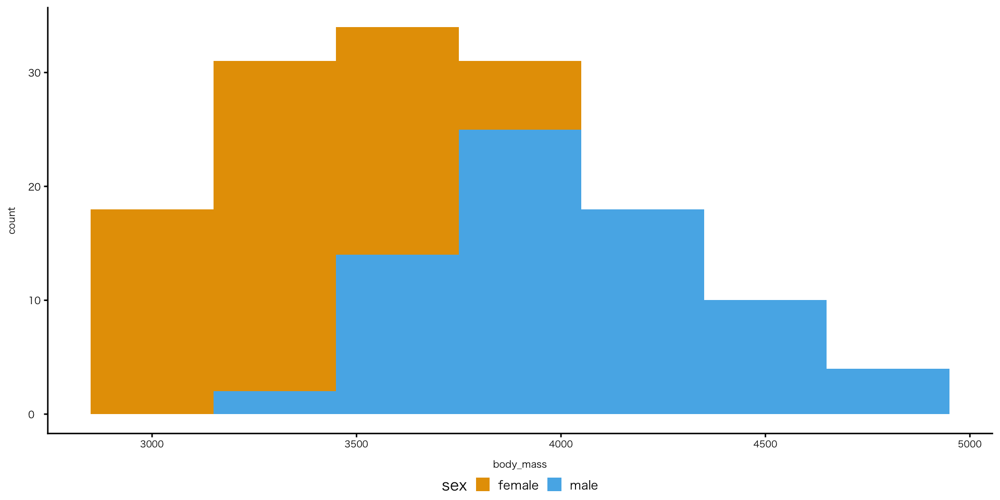

# ggplot theme_classicのフォント設定 ----
ggplot2::theme_set(
theme_classic(base_family = "Meiryo") +
theme_sub_axis_bottom(
title = element_text(size = 7, margin = margin(t = 8)),
text = element_text(size = 6.5)
) +
theme_sub_axis_left(
title = element_text(size = 7, margin = margin(r = 8)),
text = element_text(size = 7, hjust = 0)
) +
theme_sub_legend(
position = "bottom",
margin = margin(t = -6),
key.size = unit(4, "mm")
)
)RとQuartoではじめるデータサイエンス
#5 可視化(2)
苅谷千尋 ![]()
金沢大学
May 13, 2026
チャンクオプション

- ただし、echoとoutputは、YAMLでグローバル設定するのが普通(後述)
チャンクオプション
evalの使い方

- 補完入力されない

- 補完入力される
色
色の変更：ggplotのパレット
fill

colour
色
色の変更：マニュアル指定
- カラー名の他、HTMLカラーコードも使用可


色
色の変更：追加パッケージ
- 色指定の関数はパッケージごとに異なる
- パッケージのインストールと読み込みが必要
penguins |>
drop_na(species, sex, body_mass) |>
group_by(species, sex) |>
summarise(avg_body_mass = mean(body_mass), .groups = "drop") |>
ggplot(aes(x = species, y = avg_body_mass, fill = species)) +
geom_col() +
facet_wrap(~ sex) +
scale_fill_manual(values = met.brewer("Klimt", 3)) # "ダブルクォテーション内がパレット名"
軸ラベル
label_comma()関数
- 軸の値に,を足す
- 例：100000→100,000

軸ラベル
label_percent()関数
- 数値をパーセント形式に変換する関数
scale_x_continuous()関数 / scale_y_continuous()関数
- 軸の設定を変更する関数
- continuous は「連続値」という意味

軸ラベル・凡例ラベル
colour

ハイライト
- 注目してほしい部分だけを浮かび上がらせる
パッケージのインストールと読み込みが必要